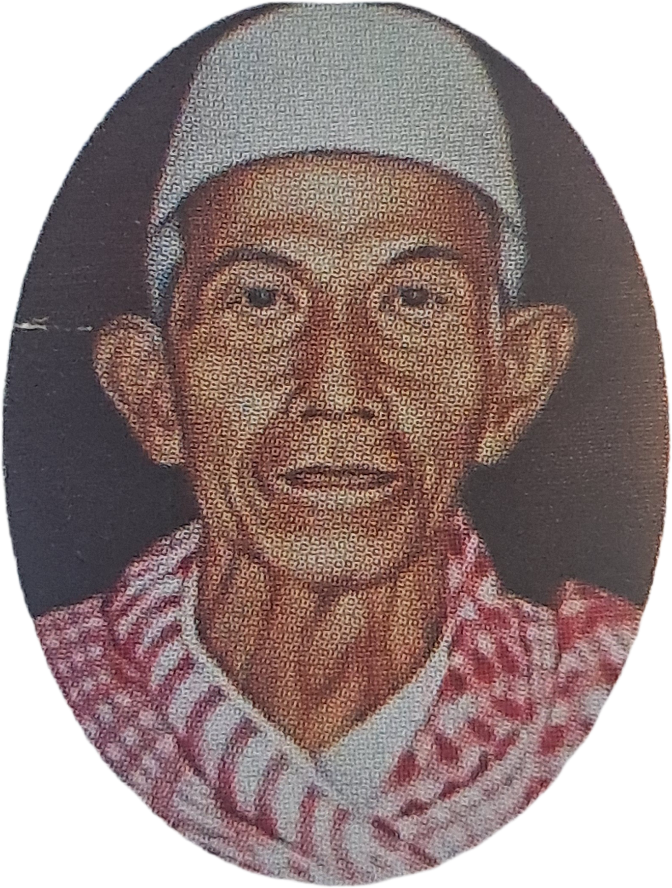

KH. Moh. Husen
Pendiri Yayasan Al-Husainiyyah Muthoyyibah
Pendiri Yayasan Al-Husainiyyah Muthoyyibah

KH. Moh. Husen lahir pada 1 Januari 1915 di Kampung Bojongjati, kaki Gunung Kacapi, Kabupaten Sumedang, Jawa Barat. Beliau tumbuh dalam keluarga sederhana yang menanamkan nilai kemandirian, kerja keras, serta kecintaan terhadap ilmu agama sejak usia muda.
Semangatnya dalam menuntut ilmu membawanya merantau ke Jawa Timur untuk belajar di Pesantren Tebu Ireng, Jombang. Di pesantren inilah beliau memperdalam ilmu agama Islam yang kemudian menjadi bekal dalam pengabdian dakwah dan pendidikan di masyarakat.
Setelah kembali ke Jawa Barat, beliau menetap di Bandung dan aktif mengajar agama di berbagai masjid serta membina kelompok pengajian masyarakat. Melalui kegiatan dakwah dan pendidikan tersebut, beliau semakin menyadari pentingnya menyediakan akses pendidikan bagi masyarakat, khususnya bagi anak-anak dari keluarga yang memiliki keterbatasan ekonomi.
Kepedulian terhadap kondisi pendidikan masyarakat inilah yang mendorong beliau untuk mendirikan lembaga pendidikan berbasis nilai keislaman dan pengabdian sosial. Dari gagasan tersebut lahirlah lembaga pendidikan yang kemudian berkembang menjadi Yayasan Al-Husainiyyah Muthoyyibah.
Sebagai bentuk komitmen terhadap pendidikan dan pengabdian kepada masyarakat, beliau juga mewakafkan sebagian tanah miliknya untuk digunakan sebagai tempat kegiatan pendidikan yang dikelola oleh yayasan.